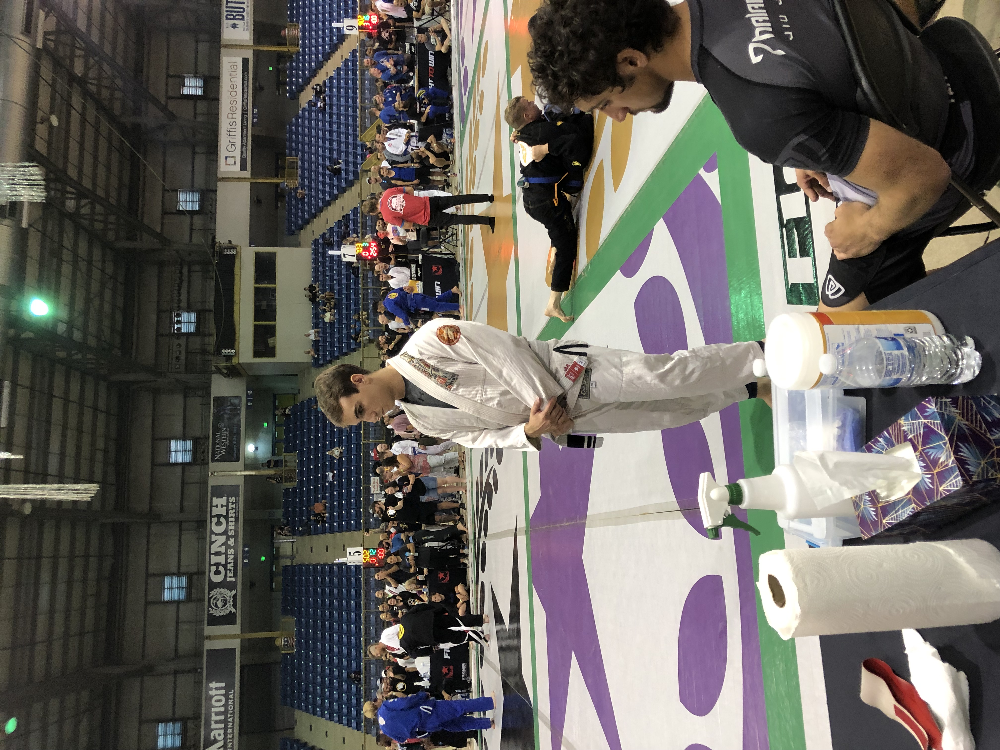
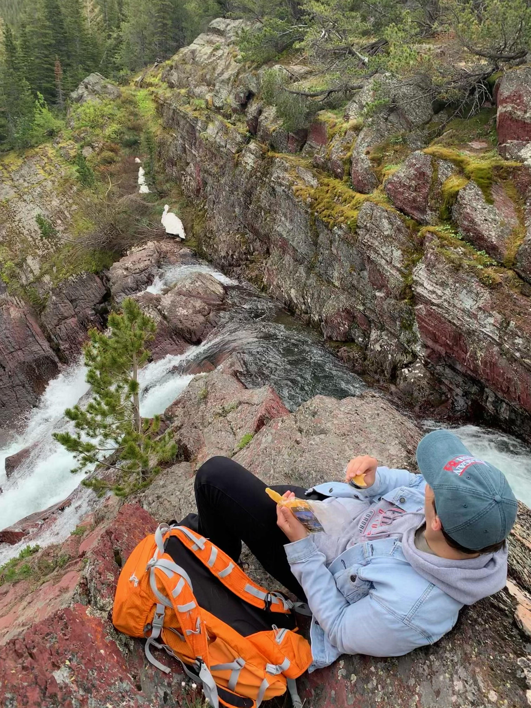

About This Webpage
Hello! My name is Hayden Hoffmeister and this is my webpage! I'm making this webpage as part of a
project for a web mapping course I am taking at Metropolitan State University Denver. This webpage
is being hosted through GitHub pages. You can the find the repository here.
This page is the for the second mini-proejct of the course, and the third version of this HTML page.
You can find the first version here. The index can be found here.
About Me
I am a student at MSU
Denver. I am majoring in Geospatial science, with a minor
in Journalism and Media Production. Outside of school, my main hobby is
competitve BJJ, which is a type of grappling mixed martial art. I also enjoy
nature, geography, and computer games.


